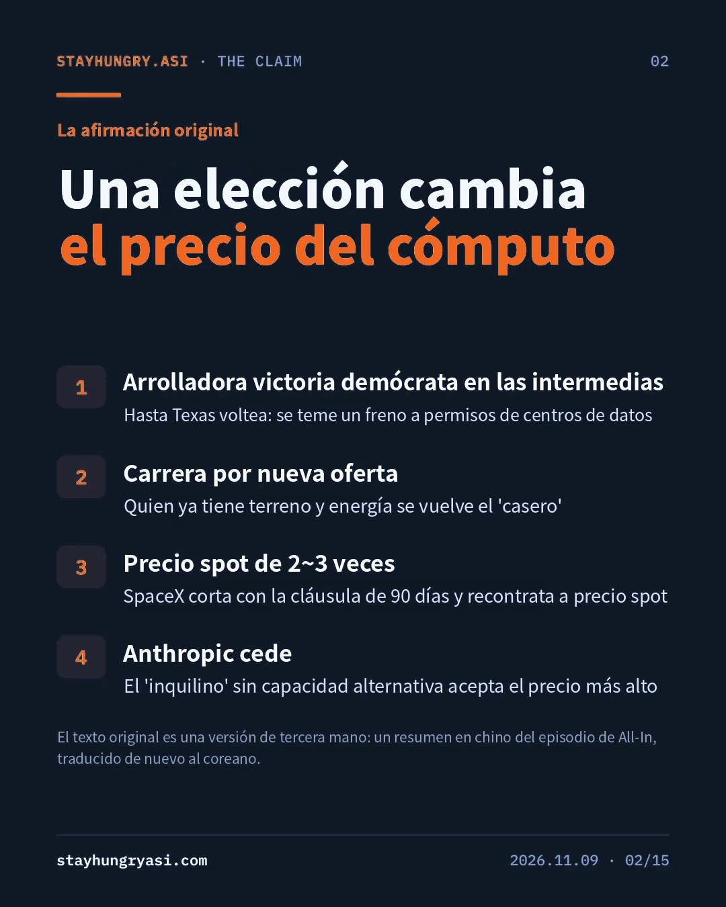
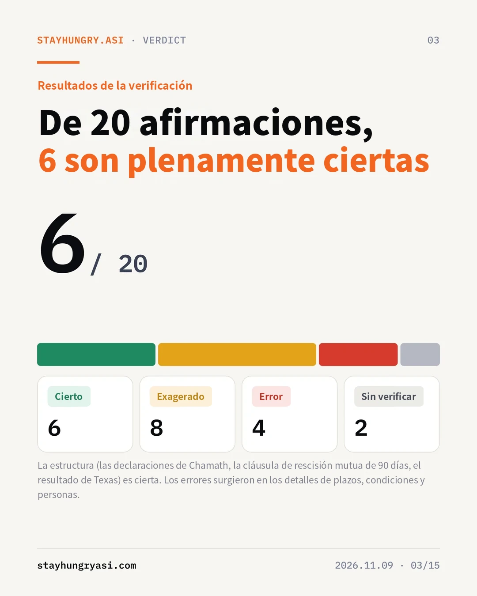
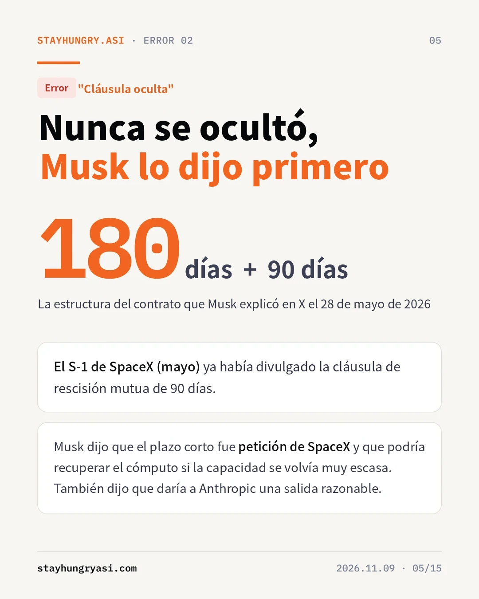
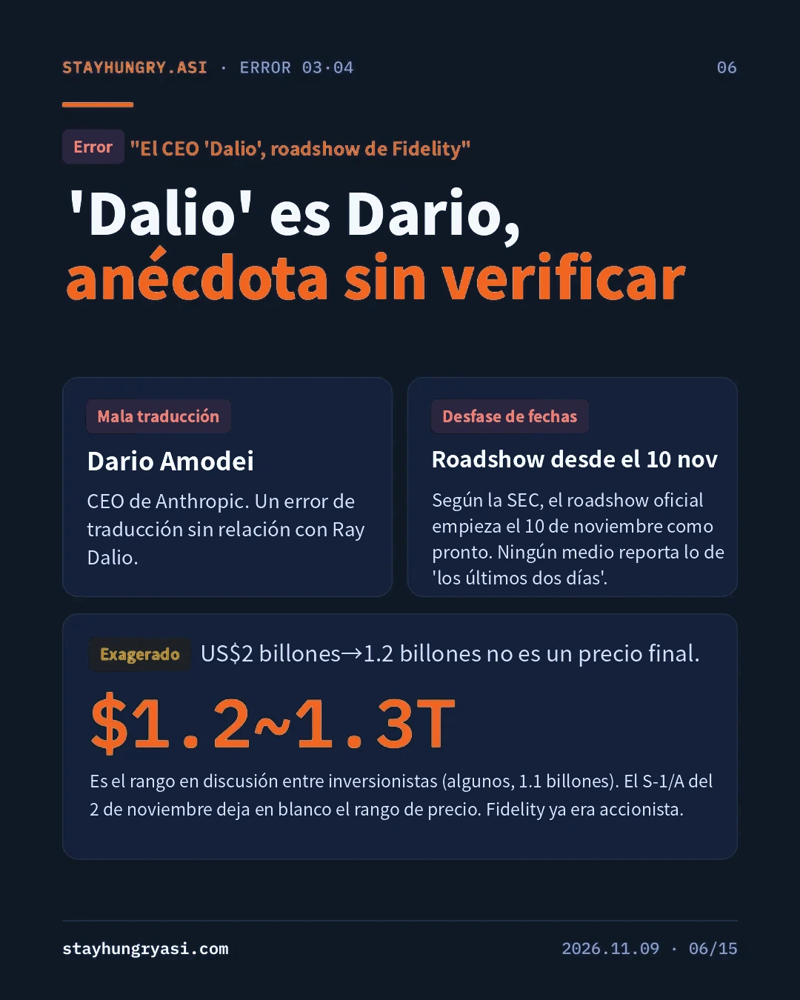
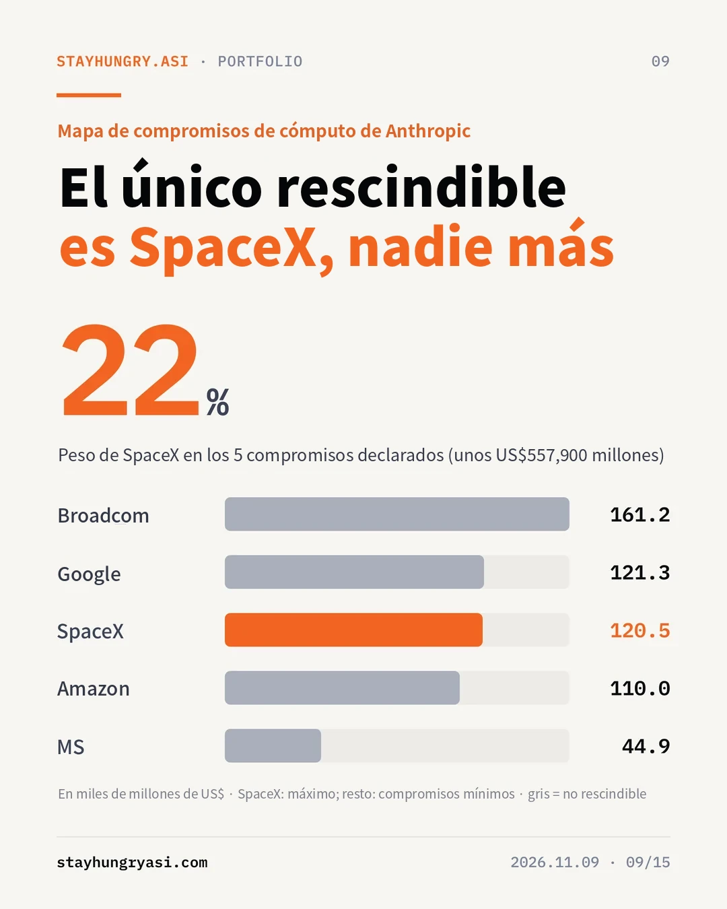
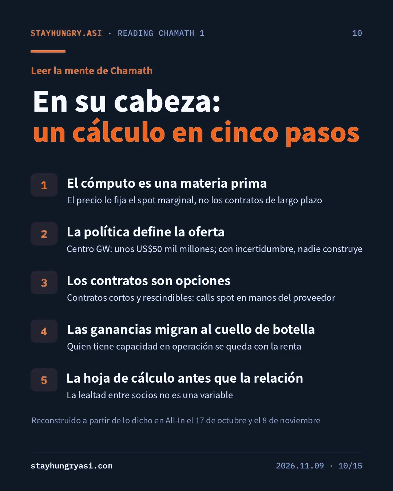
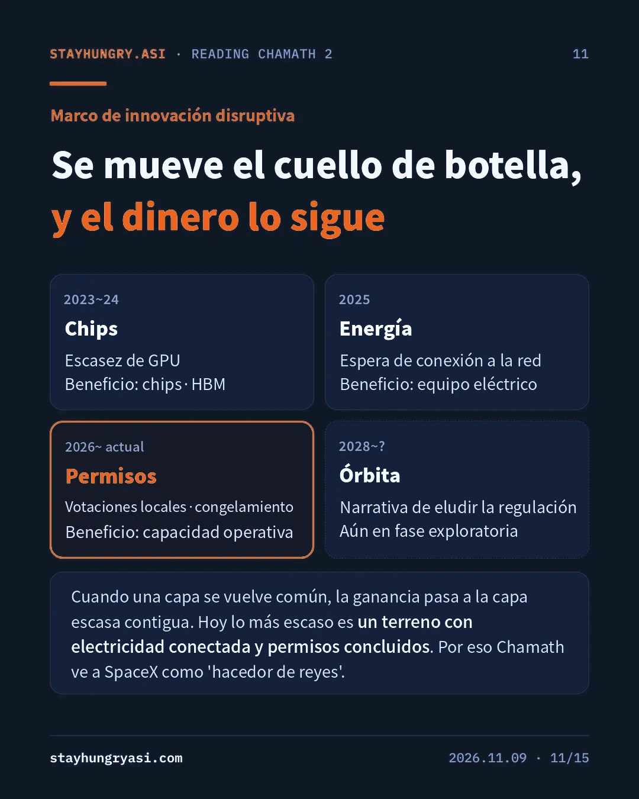
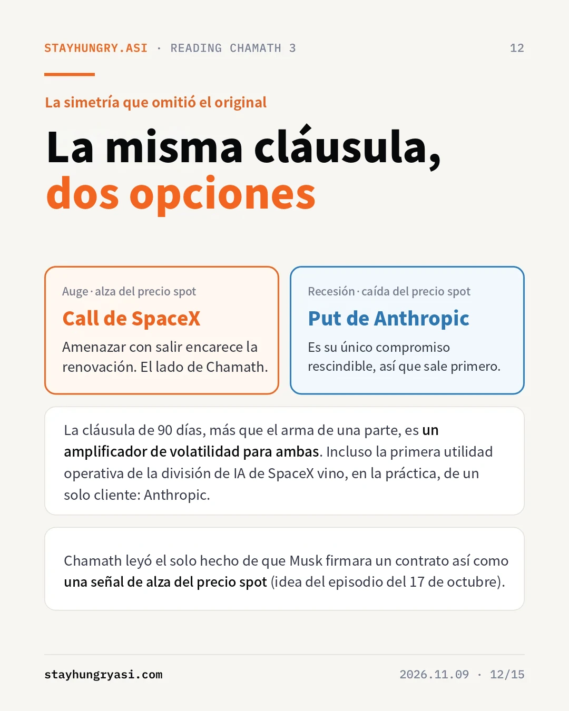
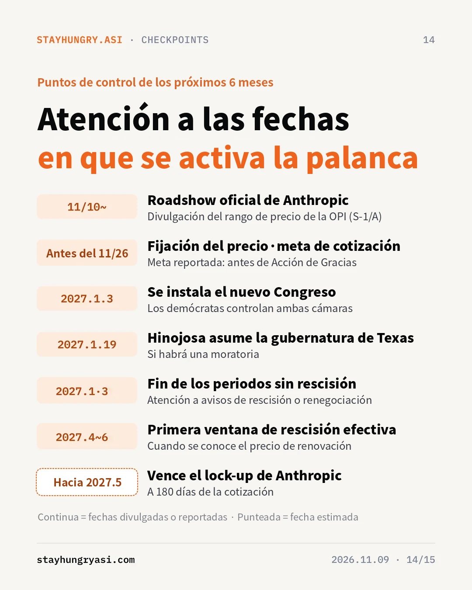
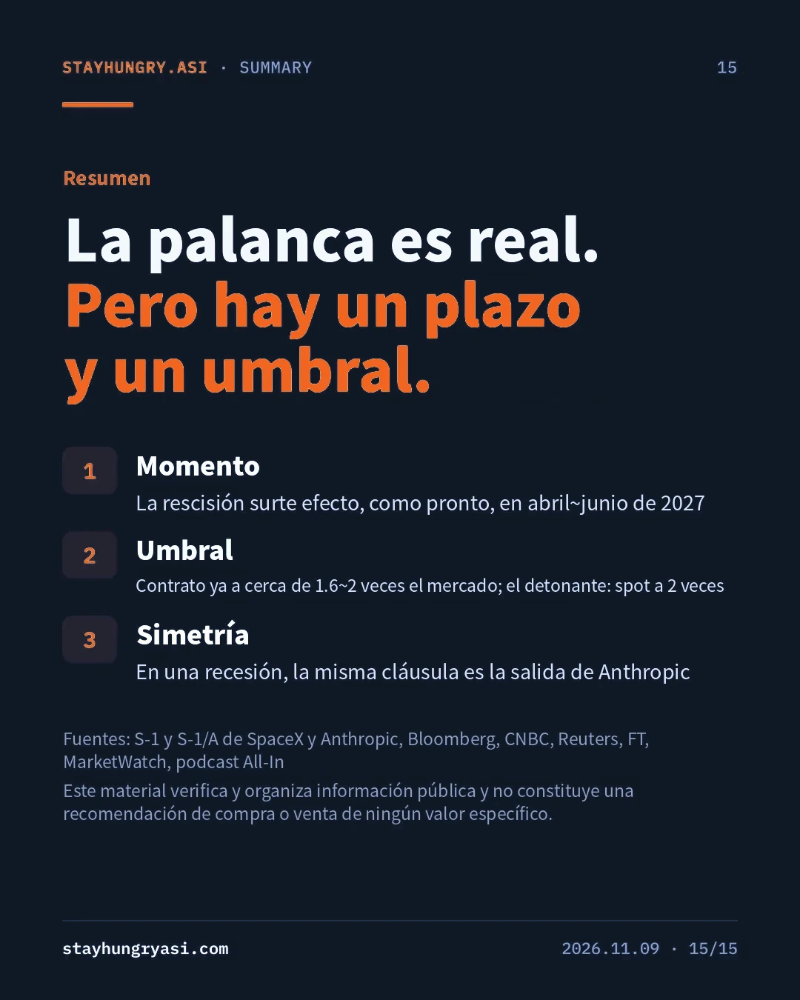

Datos al 9 de noviembre de 2026 (hora de Corea) · stayhungryasi.com
Convenciones: las cifras son hechos según las fuentes. "Estimación" indica el juicio del autor, y las probabilidades de los escenarios son un juicio subjetivo del autor. Se contrastaron las 20 afirmaciones del texto original con fuentes primarias.
Aviso de conflicto de interés: esta investigación se elaboró con la IA de Anthropic (Claude), y el texto trata sobre los contratos y la salida a bolsa de Anthropic. No constituye una recomendación de inversión.
El informe en 15 tarjetas
Lo esencial resumido en 15 tarjetas. Haga clic en una imagen para ampliarla.
























Resumen
- El "apalancamiento de rescisión a 90 días" de SpaceX que planteó Chamath Palihapitiya en el programa All-In del 8 de noviembre se basa en una cláusula contractual real. Sin embargo, la rescisión solo es posible después de que termine el periodo no rescindible de cada tramo (enero y marzo de 2027), y lo más pronto que puede surtir efecto es entre abril y junio de 2027.
- Convertido a precio unitario, el contrato equivale a unos 7.8 dólares por GPU por hora (estimación), entre 1.6 y 2 veces la mediana del mercado. Para que la rescisión le convenga a SpaceX, el precio de mercado tendría que subir unas 2 veces o más; el "spot a 2~3 veces" del texto original corresponde a este umbral de activación.
- De los cerca de 557.9 mil millones de dólares en compromisos de cómputo declarados por Anthropic, solo el contrato con SpaceX (cerca del 22%) es rescindible. La misma cláusula funciona como una opción call de SpaceX en un auge y como una opción put de Anthropic en una recesión.
1. Genealogía de la fuente y alcance de la verificación
El objeto de la verificación es un artículo en coreano que circula en Corea. Las declaraciones originales provienen del episodio del 8 de noviembre del pódcast All-In; al parecer, un resumen en chino de ellas se tradujo de nuevo al coreano de forma automática. Las grafías en caracteres chinos que quedaron en el texto, como '各地' y 'hu槽歯' (un modismo chino que significa apretar los dientes, con su primera sílaba escrita en alfabeto coreano), son el rastro de ello.
Del texto original se extrajeron 20 afirmaciones de hecho que incluyen cifras, personas, fechas, condiciones contractuales y anécdotas, y se contrastaron con los documentos presentados ante la SEC por SpaceX y Anthropic (S-1, S-1/A) y con la cobertura de Bloomberg, Reuters, CNBC, el FT y MarketWatch.
| Etapa | Contenido | Distorsión confirmada |
|---|---|---|
| Original | Pódcast All-In, episodio del 8/11 | Las declaraciones en sí están confirmadas. "4 billones de dólares evaporados en un día" es la expresión del programa y supera las cifras registradas |
| Segunda reelaboración | Resumen en chino (estimación) | Omitió la condición del periodo no rescindible; describió una cláusula divulgada como "cláusula oculta" |
| Tercera reelaboración | Traducción al coreano | Escribió "Dalio" en lugar del CEO Dario Amodei; una anécdota sobre un roadshow de Fidelity que no se puede confirmar |
2. Resultados de la verificación completa
De las 20 afirmaciones, 6 se calificaron como Cierto, 8 como Parcialmente cierto/Exagerado, 4 como Error y 2 como Sin verificar. El esqueleto de la afirmación (que las declaraciones existieron, la cláusula de rescisión mutua, los resultados electorales) es cierto, pero los errores aparecieron en los detalles que determinan el momento y las condiciones del apalancamiento.
| Afirmación del original | Veredicto | Hechos confirmados |
|---|---|---|
| El contrato tiene una cláusula bilateral de rescisión a 90 días | Cierto | La S-1 de SpaceX (mayo de 2026) y la S-1 de Anthropic (26 de octubre) divulgan una cláusula de rescisión mutua con aviso por escrito de 90 días |
| Se puede rescindir "en cualquier momento" | Error | Los plazos iniciales van hasta enero y marzo de 2027, según el tramo. Solo después cualquiera de las partes puede dar aviso de 90 días |
| La cláusula está "oculta" | Error | Divulgada en la S-1 de mayo. El 28 de mayo, Musk explicó personalmente en X que la estructura es un arrendamiento de 180 días seguido de rescisión mutua a 90 días, y que el plazo corto fue petición de SpaceX |
| El CEO "Dalio" agradeció a los inversionistas | Error | El CEO de Anthropic es Dario Amodei. La anécdota no está confirmada por ninguna cobertura |
| Un roadshow de Fidelity en los últimos dos días | Error | Según las normas de la SEC, el roadshow oficial puede empezar el 10 de noviembre como pronto. Fidelity es un tenedor existente |
| Se evaporaron unos 4 billones de dólares en capitalización | Exagerado | Solo el 5 de noviembre, unos 2.9 billones de dólares en el S&P 500 (la mayor pérdida en un día de la historia); unos 3 billones según Reuters; 3.2 billones para todo Wall Street según el FT |
| El valor de la OPI se recortó de 2 a 1.2 billones | Exagerado | El rango que discuten los inversionistas es de 1.2~1.3 billones de dólares (algunos dicen 1.1 billones). El rango de precio en la S-1/A del 2 de noviembre está en blanco |
| La peor derrota desde Watergate | Exagerado | Se informó como de una magnitud comparable a 1974. En 1974 los republicanos perdieron 48 escaños en la Cámara; la ola demócrata actual es de hasta 40 escaños, a falta del recuento final |
| Texas pasó a manos demócratas | Cierto | En la elección a gobernador, Hinojosa venció al titular Abbott, y Talarico ganó el escaño en el Senado |
| Los gobernadores rechazan los centros de datos | Exagerado | Al menos 29 jurisdicciones locales aprobaron prohibiciones o restricciones, y 1 votó a favor. La mayoría son votaciones no vinculantes, y Abbott ya había suspendido las aprobaciones |
| El precio spot podría multiplicarse por 2~3 | Sin verificar | Es una proyección. El precio spot de la B200 ya registró un alza de más del doble desde marzo de 2026 |
| "Es un problema de hoja de cálculo, no de relaciones" | Cierto | El resumen del episodio recoge una declaración en el mismo sentido |
Se incluyen 12 afirmaciones clave de las 20. Criterios: Cierto (coincide con fuentes primarias), Exagerado (dirección correcta, pero cifras o alcance inflados), Error (contradice las fuentes), Sin verificar (proyección o ausencia de cobertura).
3. Cuándo opera realmente la cláusula
El texto original describe a SpaceX como si pudiera cortar el contrato de inmediato, pero las condiciones divulgadas dicen otra cosa. Con el contrato SpaceXAI, Anthropic se comprometió a gastar hasta 120.5 mil millones de dólares hasta 2029, y paga unos 3,100 millones de dólares al mes a partir de diciembre de 2026, cuando se entrega toda la capacidad. El aviso de rescisión solo es posible cuando terminen los plazos iniciales de ambos tramos.
Aunque el aviso de rescisión se diera hoy, el cómputo se recuperaría efectivamente en el segundo trimestre de 2027. Es razonable leer las noticias sobre rescisión anteriores a esa fecha como un posicionamiento previo a la negociación de renovación.
4. El contrato en cifras: el giro que el original pasó por alto
El precio del contrato ya es cerca de 2 veces el de mercado
El contrato de la fase 1 es de 1,250 millones de dólares al mes por 300MW o más y 220,000 o más GPU de Nvidia. Convertido, equivale a unos 7.8 dólares por GPU por hora, o unos 50 mil millones de dólares al año por GW (estimación). La cifra por GW coincide con lo que Chamath mencionó en el programa del 17 de octubre: unos 50 mil millones de dólares para SpaceX y unos 20 mil millones de dólares para CoreWeave.
Colossus 1 combina H100, H200 y GB200, por lo que el precio de mercado combinado comparable se estima en 4~5 dólares. El precio del contrato es 1.6~2 veces ese nivel y, si se suman el vacío de 90 días y la fricción de volver a arrendar tras una rescisión, el precio de mercado tendría que subir unas 2 veces o más para que SpaceX ganara al rescindir. El "spot a 2~3 veces" del original es, más que una cifra exagerada, el umbral en el que el apalancamiento se activa de verdad.
Entre los compromisos de Anthropic, solo el de SpaceX es rescindible
De los 5 grandes compromisos declarados, que suman unos 557.9 mil millones de dólares, SpaceX representa cerca del 22%. Los de Google y Amazon no se pueden rescindir salvo por un incumplimiento grave no subsanado de la contraparte, y los demás también son irrescindibles. Por eso esta cláusula es, además, la primera salida que Anthropic podría usar cuando el mercado se enfríe.
Nuevo recuento de la capitalización evaporada
| Alcance | Pérdida del 5 de noviembre | Fuente |
|---|---|---|
| Afirmación del original | Unos 4 billones de dólares | Expresión del programa All-In |
| Todo Wall Street | 3.2 billones de dólares | FT |
| S&P 500 | Unos 3 billones de dólares | Reuters |
| S&P 500 | Unos 2.9 billones de dólares (la mayor pérdida en un día de la historia) | MarketWatch |
| Nasdaq-100 | 2.3 billones de dólares | Bloomberg |
| Siete Magníficas | 1 billón de dólares | CNBC |
La pérdida de un día en la bolsa estadounidense fue de 2.9~3.2 billones de dólares. Los 4 billones solo se alcanzan aproximadamente en un total global que sume los mercados asiáticos (estimación).
5. Cómo piensa Chamath: la óptica de la innovación disruptiva
Si se unen las declaraciones de Chamath en los programas del 17 de octubre y del 8 de noviembre, aparece una estructura de pensamiento coherente. Observa el cambio en la estructura del mercado más que la tecnología.
| Etapa del razonamiento | Contenido | Declaración de respaldo (sentido) |
|---|---|---|
| 1. El cómputo es una materia prima | El precio lo fija el precio spot marginal, no los contratos de largo plazo | La brecha entre contratos fijos y spot es tan amplia que los proveedores con contratos de largo plazo están dejando pasar 20 mil a 30 mil millones de dólares (17/10) |
| 2. La política fija la oferta | El congelamiento de permisos vuelve inelástica la curva de oferta | Un centro de datos de escala GW cuesta unos 50 mil millones de dólares; bajo incertidumbre nadie puede invertir (8/11) |
| 3. Los contratos son opciones | Los contratos cortos y rescindibles son opciones call sobre el spot en manos del proveedor | El simple hecho de que Musk firmara un contrato rescindible a 90 días es una señal de alza del spot (17/10) |
| 4. La utilidad se desplaza al cuello de botella | Quien posee capacidad en operación se queda con la renta | La escasez de cómputo convierte a los hiperescaladores y a SpaceX en hacedores de reyes (8/11) |
| 5. La hoja de cálculo antes que las relaciones | Las alianzas no son una variable de fijación de precios | Un asunto puramente económico, ajeno a las relaciones o a si una empresa es buena o mala (8/11) |
El cuello de botella se mueve y la utilidad se mueve con él
La "ley de conservación de las utilidades atractivas" de Christensen aclara la estructura. Cuando una capa de la cadena de valor se vuelve común, la utilidad se traslada a una capa escasa adyacente. El cuello de botella de la infraestructura de IA pasó de los chips (escasez de GPU) en 2023~24 a la energía (espera de conexión a la red) en 2025, y a los permisos (votaciones locales y congelamientos) en 2026. Lo más escaso hoy son los terrenos con energía conectada y permisos concluidos, y quien ya los tiene posee el poder de negociación.
| Periodo | Cuello de botella | Manifestación | Principales beneficiarios |
|---|---|---|---|
| 2023~24 | Chips | Escasez de GPU | Proveedores de chips y HBM |
| 2025 | Energía | Espera de conexión a la red | Equipo eléctrico, generación |
| 2026~ | Permisos | Votaciones locales, congelamiento de aprobaciones | Dueños de capacidad en operación |
| 2028~ (estimación) | Órbita | Narrativa de eludir la regulación en tierra; etapa exploratoria | Aún incierto |
Que Musk mencionara el atractivo de los centros de datos espaciales justo después de la elección sigue la misma corriente. Sin embargo, la cooperación en cómputo orbital con Anthropic está divulgada solo como una "manifestación de interés", por lo que aún es pronto para usarla como base de juicio.
Tres grietas que reveló la verificación
| Aspecto | Premisa de la lógica de Chamath | Resultado de la verificación |
|---|---|---|
| Momento | Se puede ejercer en cuanto la oferta se estreche | No puede surtir efecto antes del segundo trimestre de 2027. El nuevo gobernador de Texas tampoco asume el cargo sino hasta el 19 de enero de 2027 |
| Umbral | Si el spot sube, los contratos existentes generan pérdidas | El precio del contrato ya es 1.6~2 veces el del mercado. El spot tendría que subir unas 2 veces para que la rescisión rinda |
| Simetría | La cláusula es el arma del arrendador | En una recesión, la misma cláusula es la opción put de Anthropic. La primera utilidad operativa de la división de IA de SpaceX también provino, en la práctica, de un solo cliente: Anthropic |
6. Poder de negociación y escenarios
| Aspecto | SpaceX | Anthropic | Ventaja |
|---|---|---|---|
| Demanda o proveedores alternativos | Google también contrató capacidad de Colossus por 920 millones de dólares al mes; demanda propia de Grok | Tiene compromisos con Google, Amazon y MS, pero divulgó que no recibe toda la asignación que desea | SpaceX |
| Dependencia de la contraparte | Cliente clave para la utilidad de la división de IA | Es difícil trasladar en el corto plazo la capacidad de entrenamiento a gran escala | Mutua |
| Derechos contractuales | Aviso de 90 días a partir de 2027 | Igual | Simétrica |
| Posición del precio | Ya cobra una prima | Paga una prima | Anthropic |
| Costo de divulgación y reputación | Pérdida del mayor cliente de una empresa cotizada; promesa pública de Musk de una "salida razonable" | El riesgo de suministro durante la OPI es un factor de descuento | Similar |
| Competencia | Grok y Claude son modelos competidores | Depende de la infraestructura de un competidor | SpaceX |
| Capacidad financiera | Financiamiento con bonos corporativos y acciones | Meta de recaudar 80 mil a 100 mil millones de dólares con la OPI | Anthropic (corto plazo) |
La ventaja estructural es de SpaceX, pero como el precio del contrato ya es alto, se considera que el equilibrio racional es una negociación de alza al renovar (B) más que una rescisión real. El escenario de Chamath (C) tiene baja probabilidad, pero si ocurre es un evento de alto impacto en el que se vuelven a fijar los precios del cómputo en general.
Por qué este juicio podría estar equivocado
Primero, la mayoría de las votaciones locales no son vinculantes y queda una cartera de proyectos ya en construcción, por lo que el congelamiento de la oferta podría ser más débil de lo previsto. Segundo, si el spot se enfría, por ejemplo con el precio bajo demanda de la H100 bajando a la mitad de la franja de 2 dólares por hora por la mayor oferta de Blackwell, el valor de la opción de rescisión pasa del lado de Anthropic. Tercero, para SpaceX, como empresa cotizada, perder a su mayor cliente implica un vacío de ingresos y una carga de divulgación. Cuarto, Anthropic está asegurando rutas alternativas con los recursos de la OPI y la capacidad de TPU de Google y Broadcom que entra en operación a partir de 2027.
7. Implicaciones sectoriales y puntos de control
| Categoría | Contenido |
|---|---|
| Beneficiarios relativos | Dueños de capacidad ya en operación y con alta proporción de contratos de corto plazo. En una fase de congelamiento, crecen el valor de las instalaciones existentes y el poder de negociación en las renovaciones |
| Mixto | Chips y memoria. La demanda de actualización de clústeres existentes choca con la desaceleración de nuevos GW |
| Riesgo de ritmo | Equipo eléctrico y desarrollo de centros de datos ligados a nuevas construcciones. La cartera de pedidos amortigua, pero si se retrasan los arranques de obra en Texas y Georgia, el reconocimiento de ingresos podría ralentizarse |
| OPI de Anthropic | Que cerca del 22% de sus compromisos dependa de un solo proveedor rescindible podría ser la pregunta clave del roadshow |
| Fecha | Evento | Qué verificar |
|---|---|---|
| 10/11~ | Roadshow oficial de Anthropic (como pronto) | Divulgación del rango de precio (S-1/A) |
| Antes del 26/11 | Fijación del precio y meta de cotización (según reportes) | Magnitud del descuento por el riesgo de abastecimiento de cómputo |
| 2027.1.3 | Instalación del nuevo Congreso | Orientación de la legislación sobre IA y centros de datos |
| 2027.1.19 | Hinojosa asume como gobernador de Texas | Si se adopta una moratoria |
| 2027.1·3 | Fin del periodo no rescindible por tramo | Divulgación de avisos de rescisión o renegociación |
| 2027.4~6 | Primera ventana posible para que la rescisión surta efecto | Precio de renovación |
| Hacia 2027.5 (estimación) | Fin del lock-up de Anthropic | Oferta y demanda en torno a 180 días tras la cotización |
Fuentes
Se contrastaron la S-1 de SpaceX, la S-1·S-1/A de Anthropic (SEC), el pódcast All-In (episodios del 17/10 y del 8/11) y la cobertura que se indica abajo. La conversión del precio unitario del contrato, el precio de mercado combinado y las probabilidades de los escenarios son estimaciones del autor.
- Yahoo Finance: Anthropic IPO, SpaceX stands to make out big from AI lab's compute spending
- Offbeat Alpha: Anthropic's SpaceX deals come with an early exit
- Unite.AI: Anthropic details long-term compute commitments in amended IPO filing
- Implicator: Anthropic IPO prospectus compute commitments
- TechCrunch: How long is Anthropic's lease with SpaceX? Opinions vary
- HotHardware: Anthropic inks SpaceX deal (Colossus 2 expansion)
- Crypto Briefing: SpaceX's AI division turns profitable
- Wikipedia: Initial public offering of SpaceX
- VKTR: Anthropic's S-1 shows a compute squeeze from its own partners
- BigGo Finance: All-In 11/8 episode summary
- BigGo Finance: Midterm upset and the SpaceX compute clause
- Scuttlebutt: Chamath on data centers
- Teahose: All-In 10/17 episode notes
- Bloomberg: Anthropic IPO valuation estimates fall
- Decode the Future: Anthropic IPO valuation and date
- Breitbart: Anthropic shares could begin trading the week of November 16
- AdvisorHub: Fidelity, Capital Group stand to reap billions in Anthropic IPO
- StockAnalysis: S&P 500 loses about $2.9T, the largest one-day loss ever
- IBTimes: Dow sheds 1,833 points, Nasdaq enters correction
- Axios: 5 takeaways from a blowout midterm election
- CNBC: Voters rebuff data centers in ballot measures
- King & Spalding: What the 2026 election results mean for data center projects
- CBS News: Midterm elections could zap the data center buildout
- Akash: GPU rental prices (August 2026 medians)
- Tech Insider: B200 spot price doubled since March
Este material es una investigación que verifica y organiza información pública y no recomienda la compra ni la venta de ningún valor en particular. stayhungryasi.com